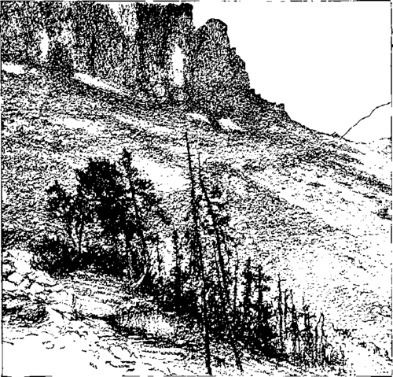

At Saint Mary's. Part 4
Description
This section is from the book "Hunting", by Archibald Rogers. Also available from Amazon: Hunting.
At Saint Mary's. Part 4
We had appropriated the guide to ourselves this day. He had told us so much about the abundance of sheep on this Kootenai Mountain, that we forgave him for his "plain, blazed trail" story of two days before, and consented to let him show us the place.
He led us a hard march for an hour and a half; but our last two days of climbing had accustomed our muscles to the unusual exercise, and so, when we were finally warned to "tread keerful" as we were approaching the lick, we were nearly as fresh as when we started out. For the next quarter of a mile we were fully occupied in attempting to tread "keerful," our hobnailed shoes and the slippery rocks combating us at every step.
For some time we had been skirting the mountain above the timber-line for better walking. Now the guide led us just inside the wood for concealment; and soon rounding a projecting crag, and ascending a wooden spur running down the mountain-side, we found ourselves peering through the trees into a large, shallow basin, treeless and rocky, and several hundred yards across. Here and there in this open could be discovered white patches of earthy shale, and these were the sheep-licks which we were seeking. They were merely spots where salts exuded to the surface from beneath, or were washed down by seepage from above; but our guide had informed us that when one once found a lick he had a sure thing, as the game of the surrounding country constantly visited the place to satisfy their natural taste for the salts found there.
Cautiously we parted the boughs and peered forth. We sought long and earnestly among the rocks for any indications of game, but with no result. To secure a better view we gradually crept forward, until at last we stood where we commanded the whole basin.
Nothing — absolutely nothing.
We could scarcely believe it. We had counted so much on this effort. But we soon realized that our guide's prognostications had proven incorrect, and we were angry.
For a time nothing was said; then the guide, seeing the gloom on our faces, evidently thought it best to say something in explanation. What he did say did not put us in a better humor. He simply could not understand it, that was all. He had always found them there before, and he did not see why they were not there now.
We said nothing, but sat down to rest from that remarkable fatigue which always attacked us immediately on the heels of a disappointment.
I fell a-thinking. It really did appear to be a favorable place for game. By lying under cover and waiting, we might yet get a shot. But we were some distance from camp, and the afternoon was fast passing; we would have but little time to spare. The idea of remaining all night was not entirely satisfactory; as we had nothing to eat, and nothing to cover ourselves with during the long, cold hours after sunset. But this was fast getting to be a serious matter with us, this sheep-chase; and it did seem that if we were ever to secure a prize at all, now was our chance. We would remain.
The proposition was promptly agreed to by Hardeman, and the guide was told to return to camp to let the rest of the party know of our plans.
"Gets pretty cold at night," said the guide, pointing to a mass of snow lying on the mountain-side a few feet above us.
We made no reply.
"Anything to eat with you?" pursued the man, evidently dissatisfied with the turn events were taking.
Our heads shook in unison a negative reply.
He turned and left us.
To our right, and at some distance above us, was a commanding position well covered with the usual scrubby, low-lying fir. From here we judged we would be able to get a view of the whole basin below us; and here we now took our places, some distance apart, Hardeman on my right watching all approaches from his side, I keeping a lookout to the left.
A Sheep "Lick."
The mosquitoes and mountain-flies were terrible; and had it not been for the vile-smelling mosquito "dope," which we carried and used, we could scarcely have withstood the pests.
We watched and waited, but without reward. Several hours passed; and the sun, shining full in our faces, dropped lower and lower. From the valley below came stealing toward us the shadows of the western peaks, blighting all they touched with their darkened shapes, turning the silver of the mountain streams to ink, veiling the forest with a hood of gloom, silently, relentlessly creeping up the slopes, — higher and higher, — until at last they entered our shelter, and sought us out. The air grew chill; the leaves dropped motionless.
The sun had set; it was night.
Weary and stiff, and rather disgusted with sheep-hunting as a means of sport, we now betook ourselves to the timber below, and began making preparations for the night.
Selecting a smooth bit of ground, we covered it with twigs of pine, chopped with our hunting-knives from the surrounding trees. At the foot of our improvised bed we built a fire; and its cheerful warmth soon put us in better humor, and made our eyelids heavy as well. We fell asleep, and slept soundly until we slipped into the fire, which may have been ten minutes after slumber overtook us. Hardeman and I were good travelling companions, each making a point of always doing his part of the work, and undergoing his half of the privations. I suppose that this is the reason that neither of us, as he picked himself out of the fire, evinced any surprise at seeing the other doing the same. Our bed, though smooth, was sloping, the pine-needles were slippery, and the fire was at the lower end of the bed. We had fallen asleep at the same time, side by side, began our unconscious sliding race to the fire, and had come in together, neither claiming any advantage at the finish.
"A dead heat," suggested Hardeman, as with one hand he fanned his ankle with the frayed flap of his trouser leg, and with the other he ceased touching the sole of his shoe, which was filled with hob-nails lately heated in the fire.
Continue to: